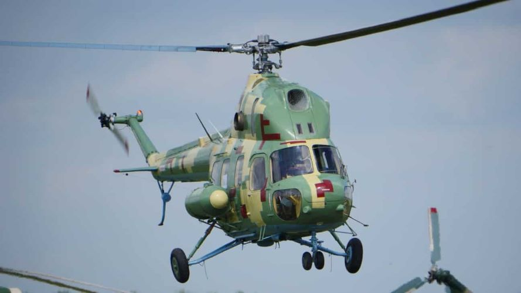

Мі-2МСБ
Мі-2МСБ - український багатоцільовий гелікоптер, створений ПАТ «Мотор Січ» на основі Мі-2.
Сертифікат розробника даного вертольота компанія «Мотор Січ» отримала в 2011 році, в квітні 2013 року почалися його випробування і підготовка до серійного виробництва. 4 липня 2014 року було здійснено перший політ.
На вертоліт Мі-2МСБ встановлюють сучасний двигун АІ450М (розроблений ДП «Івченко-Прогрес» і виробляється на ПАТ «Мотор Січ») потужністю 465 к.с., частково встановлена нова авіоніка, що кардинально відрізняє його від Мі-2. Це абсолютно інша машина за всіма характеристиками: шуму, паливної економічності на висоті, вантажопідйомність стала в рази вище. Максимальна швидкість - 250 км на годину.
Також внесено зміни до бортового обладнання: дообладнано систему управління(встановлюється нова панель управління з рідкокристалічними моніторами виробництва київського ВАТ НТК «Електронприлад»), встановлено станцію супутникової GPS-навігації СН-4312У, аварійний радіомаяк ARTEX C406-1НМ, сигнал зледеніння СО-121ВМ та прилад реєстрації польотних даних БУР-4-1-07-02
Військова машина, що була прийнята на озброєння України вже в 2015 році. За попередніми даними, новий легкий ударний вертоліт буде призначений для виконання оперативно-тактичних завдань в інтересах підрозділів Збройних Сил, боротьби з живою силою і бронетехнікою противника. Планується, що МСБ-2МО матиме версії протитанкову, розвідувальну та корабельного базування